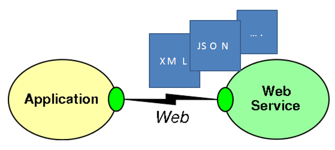
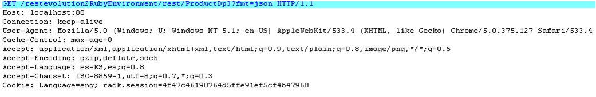

Web services allow programs written in different languages and running on different platforms to communicate with each other following standards. There are cases where we want to access to resources provided by other applications with particular emphasis on the optimization of HTTP traffic (important when clients are mobile devices for example). REST is a style of web services design, which guarantees Interoperability under a paradigm of simplicity and "saving of resources". In GeneXus, REST solutions can be incorporated into applications very easily. Basically, the goal is to expose application data or what we call "resources" or entities on the web, with an output with a standard format (XML, JSON), to be interpreted by a program that runs on any platform or framework, or even on any HTTP client.  SOAP solution to the problem of interoperability: RESTThere are some protocols and standards built on HTTP that are designed to create web services such as as WS *. Soap is a lightweight protocol for exchange of information in a decentralized, distributed environment; data representation is done through XML protocol. A SOAP message is an XML document that consists of a mandatory SOAP envelope, an optional header, and a required body. Another solution to the same problem: REST. The following is an example of invoking a REST service where you can see in the HTTP header the invocation (HTTP GET) and the body's response (JSON containing the answer.) Note that the answer is a list of products where each product contains a URI to access the product detail. The response is characterized by being compact and lightweight.  What is REST?Representational State Transfer or REST is a style of software architecture for distributed environments. It is not a protocol. REST is a resource-oriented model. It means that each URL is a representation of an object —or resource—. Each resource is represented by a URI. You can do a GET of that resource using the HTTP GET method, modify it with the HTTP PUT method, create a new representation with HTTP POST and HTTP DELETE to delete the method (i.e. that, there is a uniform interface to access the resource) . In turn, each resource has n possible representations that can be XML, JSON, etc. REST makes a series of rules or restrictions. REST's followers say the web has enjoyed scalability as a result of some key basic designs. Based on these foundations is that they created the principles or constraints that must meet a REST architecture.
|
| Pages | ||
| Consuming REST Data Providers in Genexus | Services URL property | Troubleshooting secure rest services |